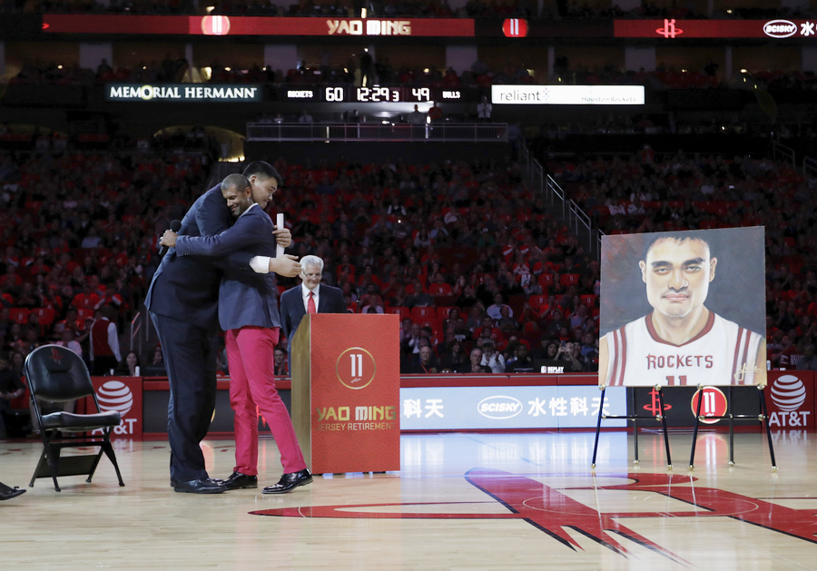

On July 20, 2011, Yao announced his retirement from basketball saying that injuries to his ankle and feet, such as his third ankle fracture is
what lead him to retire at the age of 30.
NBA Commisioner David Stern is stated saying that Yao Ming was the bridge between America and China when it came to basketball. He allowed
Americans to see the talent that is found around the world in the game of basketball.
Yao Ming was officaly inducted into the NBA Hall of Fame in 2016, alongside Shaq and Allen Iverson. In 2017 jersey number 11 was officailly
retired by the Houston Rockets to honor Yao Ming and his accomplishments on the team.